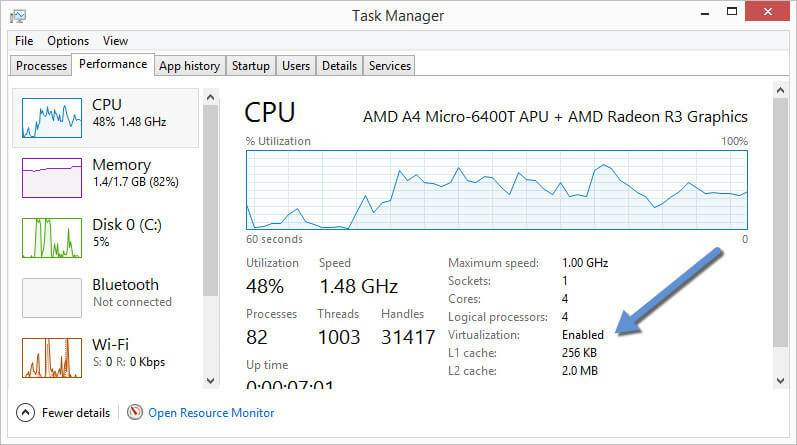

Installation via Docker
Cette solution est basée sur le logiciel de gestion de conteneurs Docker. Cet outil permet d'empaqueter une application et ses dépendances dans un conteneur isolé, qui pourra être exécuté sur n'importe quelle machine possédant le logiciel. Dans un premier temps, il est donc nécessaire d'installer Docker sur votre machine
Installation de Docker sous Windows
Pré-requis
Tout d’abord, vous devez utiliser Windows 7 ou plus récent. Ensuite assurez vous que votre CPU supporte la virtualisation et que celle-ci soit activée dans le BIOS et reconnue par Windows.
Sous Windows 7
Téléchargez et lancez Microsoft® Hardware-Assisted Virtualization Detection Tool puis suivez les instructions.
Sous Windows 8, 8.1 ou 10
Ouvrez le Gestionnaire des taches et cliquez sur Performance. Dans le menu CPU, vérifiez que la Virtualisation soit bien activée.
Installation
Commencez par télécharger Docker Toolbox et installez le programme. Notez que pendant l’installation Virtualbox ne doit pas être lancé.
Lancer un conteneur Docker
Avant de pouvoir lancer un conteneur Docker vous devez créer ou lancer une machine virtuelle existante.
Il y a plusieurs moyens d’utiliser Docker sous Windows, via Docker Quickstart Terminal, l’invite de commandes Windows ou Powershell.
En utilisant Docker Quickstart Terminal
Commencez par double cliquer sur l’icone du programme sur votre bureau. L’application va alors
- Ouvrir un terminal
- Créer une machine virtuelle default et la démarrer
- Configurer la VM
Une fois ce processus terminé vous pouvez utiliser les commandes docker, commencez par lancer le conteneur hello-world
En utilisant l’invite de commandes Windows (cmd.exe)
Ouvrez une invite de commandes Windows et créez une nouvelle machine virtuelle Docker